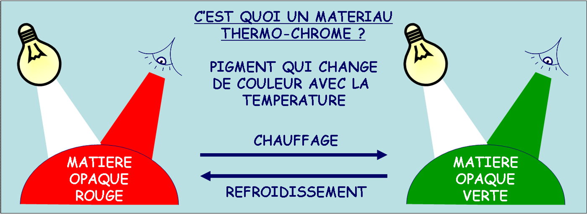

Certains mat�riaux ont la particularit� de changer de couleur selon les conditions
dans lesquelles ils se trouvent.
Il existe de pigments changeant de couleur sous l'effet d'une temp�rature (thermo-chromes),
d'une pression (piezo-chromes) ou encore d'une lumi�re (photo-chromes).
C'est ainsi que fonctionne le thermo-spot des po�les Tefal offrant ainsi un indicateur visuel
de la temperature id�ale pour r�aliser vos cr�pes.

Choisi une movie :
(c) 2009 Institut des Mat�riaux Jean Rouxel (IMN), Nantes